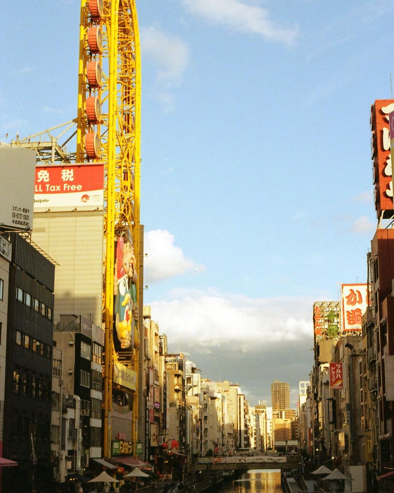
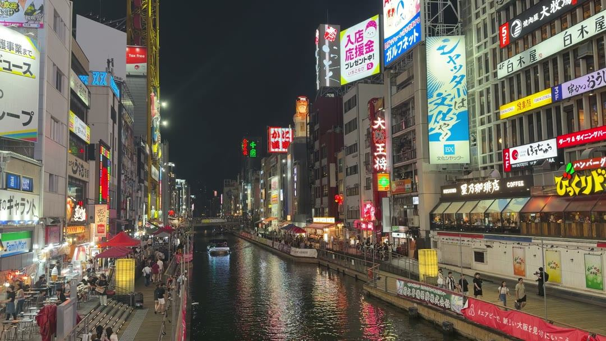
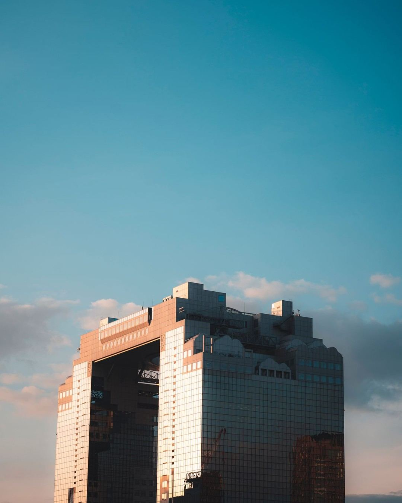
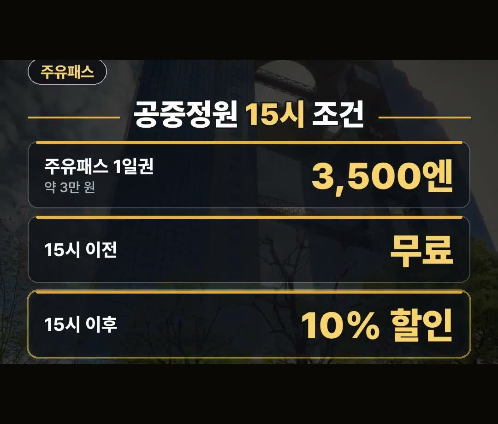
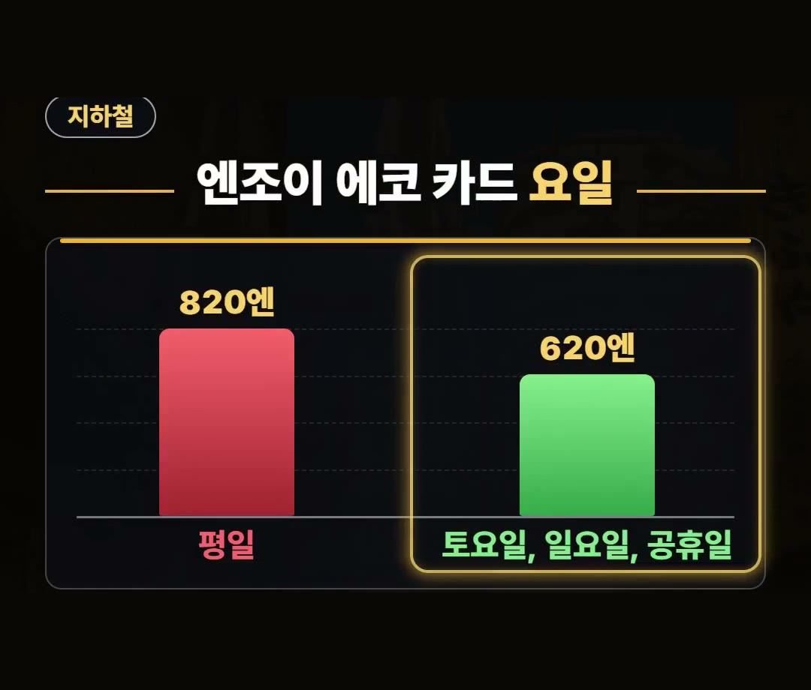
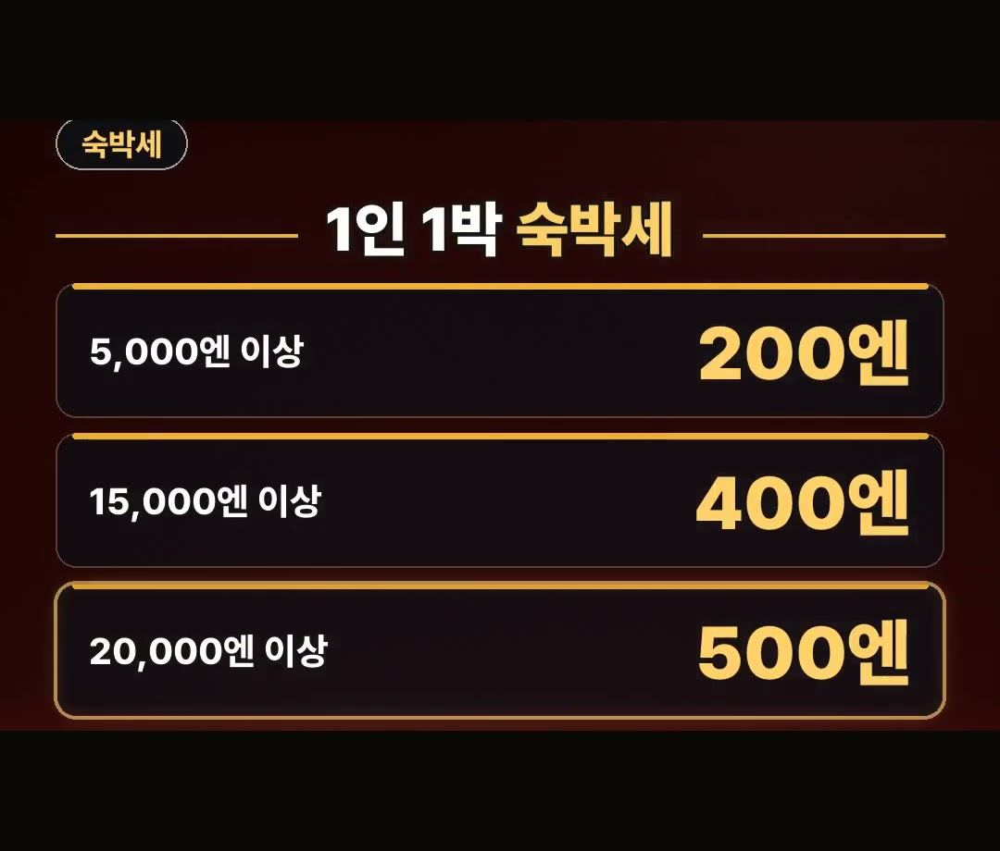
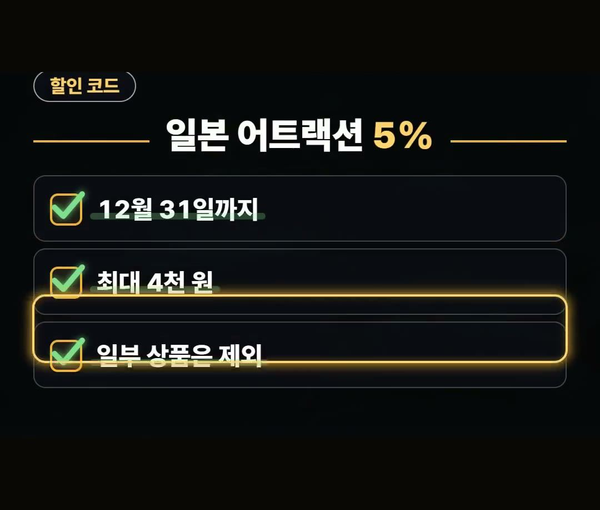

오사카 여행, 주유패스 사기 전에 모르면 손해 보는 조건 정리
※ 이 글에는 제휴 링크가 포함되어 있으며, 링크를 통해 예약·구매하시면 일정 수수료를 받을 수 있습니다. (가격은 같습니다)
※ 이 포스팅은 쿠팡 파트너스 활동의 일환으로, 이에 따른 일정액의 수수료를 제공받습니다.
오사카 여행을 계획할 때 교통 패스의 혜택 조건과 요일별 이용 금액 차이를 미리 확인하면 더 나은 일정을 계획할 수 있으며, 준비 단계부터 세부 사항을 챙기는 편이 좋습니다.

2026년 10월 기준 주유패스 1일권은 3,500엔(약 3만 원)이지만 우메다 공중정원은 15시 이전에만 무료라는 점을 꼭 기억해 두세요!
2025년 9월 1일부터 변경된 숙박세 기준도 놓치지 말고 체크하시길 바랍니다 💡
오사카 여행 준비 시 값보다 조건이 먼저인 이유
오사카로 출발하기 전에 패스나 티켓을 살펴볼 때는 값보다 조건을 먼저 확인하는 것이 중요합니다.
패스 한 장으로 많은 곳을 이용할 수 있어 보여도 실제 이용 조건에 맞춰 이동하지 않으면 생각했던 혜택을 다 누리지 못할 수 있기 때문입니다.

예를 들어 대표적인 패스 중 하나인 오사카 주유패스는 주요 관광지 입장 혜택이 포함되어 있지만, 장소마다 무료 적용 시간이 별도로 정해져 있기도 합니다.
따라서 방문하려는 장소의 무료 입장 시간이나 조건이 맞는지 떠나기 전에 미리 점검하시는 것이 좋습니다.

오사카 주유패스 우메다 공중정원 15시 조건
오사카 여행에서 우메다 공중정원을 방문할 계획이라면 입장 시간에 특히 주의하셔야 합니다.
2026년 10월 기준 주유패스 1일권의 값은 3,500엔, 약 3만 원입니다.

주유패스로 우메다 공중정원에 들어갈 경우 15시 이전에만 무료 입장이 적용됩니다.
15시 이후에 방문하게 되면 무료 혜택이 아닌 10% 할인만 적용되므로, 주유패스를 활용해 공중정원에 가실 분들은 15시 넘기지 않도록 방문 시간을 맞춰 움직이시는 것을 권해 드립니다.

지하철 이용 시 확인하는 엔조이 에코 카드와 오사카여행경비
관광지 입장보다 지하철 위주로 이동할 생각이라면 지하철 1일 승차권인 엔조이 에코 카드가 대안이 될 수 있습니다.
엔조이 에코 카드는 이용하는 요일에 따라 구매 금액에 차이가 있어서 전체 오사카여행경비 계산 시 미리 알아 두시면 좋습니다.

엔조이 에코 카드의 요일별 가격 기준은 아래와 같습니다.
- 평일: 820엔 (약 7천 원)
- 토요일, 일요일, 공휴일: 620엔
평일보다 주말이나 공휴일에 이용 금액이 더 낮게 설정되어 있으니 일정에 맞춰 활용하기 좋습니다.
2025년 9월 1일부터 바뀐 1인 1박 숙박세 기준
오사카 숙박 시 발생하는 숙박세 기준도 2025년 9월 1일부터 개정되어 적용되고 있습니다.
1인 1박 숙박 요금 금액대에 따라 지불해야 하는 숙박세가 달라지므로 여행 전 숙박 예산을 세울 때 참고할 필요가 있습니다.

개정된 1인 1박 숙박세 기준은 다음과 같습니다.
- 1인 1박 숙박 요금 5,000엔 이상: 200엔
- 1인 1박 숙박 요금 15,000엔 이상: 400엔
- 1인 1박 숙박 요금 20,000엔 이상: 500엔
일본 어트랙션 할인과 데이터 준비
어트랙션 입장권을 준비할 때는 적용 가능한 할인 이벤트를 확인해 두는 것이 도움 됩니다.
클룩에서는 12월 31일까지 일본 어트랙션 5% 할인 코드를 제공하고 있습니다.

할인 코드 관련 상세 조건은 아래 내용을 참고하세요.
- 기간: 12월 31일까지
- 할인율: 5% (최대 4천 원까지)
- 참고 사항: 일부 상품은 제외
현지에서 사용할 데이터는 이심(eSIM)으로 미리 준비해 두시면 편리하게 이용할 수 있습니다.
각 패스 및 티켓의 정확한 값과 세부 조건은 떠나기 전에 공식 안내에서 다시 확인하시는 것을 추천합니다.
정리
2026년 10월 기준 주유패스 1일권(3,500엔, 약 3만 원) 이용 시 우메다 공중정원은 15시 이전에만 무료이고 이후는 10% 할인입니다.
지하철 1일 승차권 엔조이 에코 카드는 평일 820엔(약 7천 원), 토요일·일요일·공휴일 620엔이며 숙박세는 2025년 9월 1일부터 1인 1박 5,000엔 이상 시 200엔부터 부과됩니다.
클룩에서는 12월 31일까지 최대 4천 원 한도의 일본 어트랙션 5% 할인 코드를 사용할 수 있습니다 (일부 상품 제외).
최저가 예약 링크는 아래에 모아 두었어요.
지금 쓸 수 있는 여행사 할인
- 📶 해외 데이터는 이심으로 미리 · 마이리얼트립 마이심 「일본 50% 1,400원~」 · 2개 이상 추가 할인 (마이심 화면 표시 기준 · 10/5 확인 · 값은 바뀔 수 있음)
- 🎟 클룩 일본 어트랙션 5% 할인 코드 「일본어트랙션5%」 (최소 구매 금액 없음 · 최대 4천 원 · 일부 상품 제외 · 쿠폰 취소 시 재발행 불가 · 예산 소진 시 조기 종료 · 12월 31일까지)
※ 여행사 사정으로 조건이 바뀌거나 일찍 끝날 수 있어요. 예약 전에 여행사 화면에서 한 번 더 확인하세요. (2026-10-05 확인)
📌 2026년 10월 기준 정보예요. 가격은 환율·시기에 따라 달라질 수 있어요.
영상 화면: Pexels (Ali Alcántara, Jianqing Xu, Paco Solórzano, Ryoichi Nakano, Stephan Leuzinger, Tanvir Araf)
사진: Pexels (Alan Wang, Z L, Willian Justen de Vasconcellos)
사진: Pixabay (xegxef)